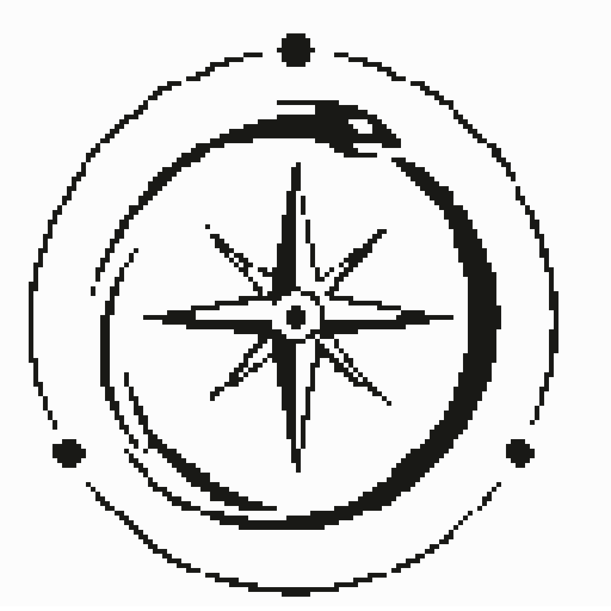

COLLECTIONS
蒐集
館主が蒐集した鉱物、古書、 歴史資料などを、写真や解説とともに 紹介する場所です。
資料の名称、特徴、来歴、 観察結果などを記録し、 資料そのものについての情報を 残すことを目的としています。
なお、蒐集を続けると物は増える一方。 蒐集の楽しさと、少々の後悔も 詰まっている場所です。
蒐集を見る →ABOUT INH
蒐め、観察し、調べ、つくる。
私設博物誌 （Independent Natural History / INH）は、 館主個人の蒐集物、実験、研究、 自然観察、自作装置などを、 分野を問わず記録・公開する 独立したアーカイブです。
小さな疑問から、時間をかけた調査や研究まで。 興味を持ったことを自ら調べ、試し、 その過程で得られた知識を少しずつ残しています。
01 / NAME & SYMBOL
「私設」という言葉には、 特定の機関や組織ではなく、 個人によって設けられ、運営される 場所という意味を込めています。
「博物誌」は、身の回りに存在する さまざまな事物を蒐め、観察し、 調べ、記録していくという 本活動の姿勢を表しています。
化学、自然史、歴史、技術など、 特定の分野にとらわれることなく、 自らの興味を出発点として知識を蓄積し、 他者と共有していく。
そのような場所を目指し、 「私設博物誌」と名付けました。
英語名は Independent Natural History、 略称は INH です。

私設博物誌のアイコンには、 羅針盤、ウロボロスの蛇、 電子軌道をイメージした円、 そして三つの球を組み合わせています。
終わりのない学問の世界を進むための 道しるべを表しています。
自らの尾をくわえる蛇の姿に、 異なる学問や知識が互いにつながる という意味を込めています。
電子の軌道をイメージしたもので、 科学的な探究を象徴しています。
「蒐める」「記録する」「考える」という 三つの柱を表しています。 球は電子をイメージしており、 回り続ける姿に継続的な探究への 思いを込めています。
アイコン全体を通じて、 分野を越えた知識のつながりと、 終わることのない探究活動を 表現しています。
02 / PHILOSOPHY
私設博物誌が大切にしているのは、 自らの知識や経験を駆使して未知の事柄を探究し、 その過程と成果を、他者が参照できる形で 残していくことです。
科学や技術の価値は、 必ずしも経済的な利益だけで 決まるものではないと考えています。
知ろうとする好奇心や、 試行錯誤しながら自ら道を切り開いていく 営みそのものも大切にしたいと思っています。
完成した成果だけではなく、 途中経過、失敗、測定上の問題点、 未解決の疑問なども記録します。
何を試し、どのような結果が得られ、 何が分からなかったのか。 そうした情報も、後から同じ問題に取り組む人の 手掛かりになるかもしれません。
化学、地質、鉱物、自然観察、 歴史、電子工作、計算科学など、 活動する分野に制限は設けません。
異なる分野の知識が結び付き、 新しい発想につながることも、 探究の面白さの一つだと考えています。
03 / CONTENTS
私設博物誌では、掲載する資料や活動を 五つの項目に分けています。
COLLECTIONS
館主が蒐集した鉱物、古書、 歴史資料などを、写真や解説とともに 紹介する場所です。
資料の名称、特徴、来歴、 観察結果などを記録し、 資料そのものについての情報を 残すことを目的としています。
なお、蒐集を続けると物は増える一方。 蒐集の楽しさと、少々の後悔も 詰まっている場所です。
蒐集を見る →RECORDS
実験、観察、調査、計算、工作など、 実際に行った活動と、 その過程・結果を記録する場所です。
研究報告のような体系的な文章だけでなく、 実験日誌、科学遊び、 ちょっとした気づきなども掲載します。
大きな成果だけでなく、 小さな試みも記録として残していきます。
記録を見る →INSTRUMENTS
自作した装置や、 実験・観察に使用する機材を紹介する場所です。
構造、仕様、設計、製作過程、 性能評価、改良点など、 装置そのものに関する情報を扱います。
可能な範囲で設計資料や部品表も公開し、 同様の装置を製作する人の 参考になることを目指します。
装置を見る →PHOTOGRAPHIC ALBUM
写真そのものを中心に公開する場所です。
自然、鉱物、顔料、歴史資料、天体など、 さまざまな対象を写真として収めています。
詳しい解説よりも、 まずは写真を楽しむことを重視します。
写真のための写真帖です。 大事なことなので、二度言いたくなる場所です。
写真帖を見る →SOUVENIRS
鉱物や顔料、科学、自然史などを題材とした 個人制作物を紹介・頒布するための項目です。
小瓶に収めた顔料・鉱物標本など、 科学や自然史を身近に感じられる 制作物を構想しています。
現在は準備段階であり、 将来的には活動費の一部を 補う手段としても活用したいと考えています。
おみやげの案内へ →04 / ORGANIZATION
一つの対象が複数の項目に 登場することもあります。
例えば、顔料の「ベンガラ」であれば、 保存している標本は「蒐集」、 製作実験は「記録」、 撮影した写真は「写真帖」に掲載します。
つまり、 蒐集は「もの」、 記録は「活動」、 装置は「機材」、 写真帖は「写真」 を中心に扱います。
関連する資料同士を結び付け、 一つの対象をさまざまな視点から 調べられる場所を目指しています。
05 / PUBLICATION POLICY
研究記録、観察資料、写真などは、 原則として無料で閲覧できるようにします。
ただし、無料で閲覧できることと、 無条件で転載・再利用できることは別です。 再利用条件は、各資料の権利表示に従います。
実験や研究では、結果だけでなく、 測定条件、実験手順、使用機器、 データ、問題点なども可能な範囲で公開します。
観察した事実と推測・仮説は区別し、 必要に応じて参考文献を示すよう努めます。
また、個人の実験記録と、 査読を受けた学術論文は区別して扱います。
採集地の保護、撮影・採集の許可、 著作権、個人情報、実験の安全性などに配慮し、 一部の情報を公開しない場合があります。
06 / MANAGEMENT
私設博物誌は個人によって運営されています。 WebサイトにはGitHub Pagesを利用し、 できるだけ費用を抑えて活動しています。
一方、研究や蒐集、装置製作には、 試料、工具、測定機器、 調査費用などが必要となります。
活動を継続するため、 制作物の頒布や任意の支援などによる 資金確保も検討しています。
知識の共有と探究を目的とし、 資金獲得はその活動を続けるための 手段とします。
利益の最大化そのものではなく、 自由な探究と資料公開を 無理なく続けていくことを重視します。
07 / CURATOR
私設博物誌は、 科学、自然史、歴史などに関心を持つ 一人の館主が運営しています。
専門的な研究から気軽な科学遊びまで、 興味を持ったことを自分なりに調べ、 試し、記録していきます。
この博物誌は完成されたものではなく、 館主の活動とともに少しずつ増え、 変化していく場所です。
更新情報や日々の活動は、 公式X でも発信しています。
蒐め、観察し、調べ、つくる。
トップページへ戻る →